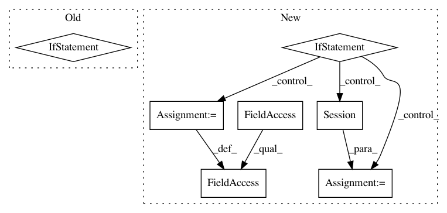

c99295e1903952b3b806c4fd641e28f852b17c36,autokeras/utils.py,ModelTrainer,train_model,#ModelTrainer#,101
Before Change
else:
flow = None
for _ in range(constant.MAX_ITER_NUM):
if constant.DATA_AUGMENTATION:
self.model.fit_generator(flow, epochs=constant.EPOCHS_EACH)
else:
self.model.fit(self.x_train, self.y_train,
batch_size=batch_size,
epochs=constant.EPOCHS_EACH,
verbose=self.verbose)
loss, _ = self.model.evaluate(self.x_test, self.y_test, verbose=self.verbose)
if self._converged(loss):
break
return self.minimum_loss
After Change
min_lr=0.5e-6)
callbacks = [terminator, lr_scheduler, lr_reducer]
if constant.LIMIT_MEMORY:
config = tf.ConfigProto()
config.gpu_options.allow_growth = True
sess = tf.Session(config=config)
backend.set_session(sess)
try:
if constant.DATA_AUGMENTATION:
flow = self.datagen.flow(self.x_train, self.y_train, batch_size)
self.model.fit_generator(flow,
In pattern: SUPERPATTERN
Frequency: 3
Non-data size: 7
Instances
Project Name: jhfjhfj1/autokeras
Commit Name: c99295e1903952b3b806c4fd641e28f852b17c36
Time: 2018-04-18
Author: jhfjhfj1@gmail.com
File Name: autokeras/utils.py
Class Name: ModelTrainer
Method Name: train_model
Project Name: tensorflow/transform
Commit Name: 96e4af6e86e93da021c29a4273dcdfaeab8fdfcf
Time: 2017-08-07
Author: tf-transform-dev@google.com
File Name: tensorflow_transform/beam/impl.py
Class Name: _RunMetaGraphDoFn
Method Name: process